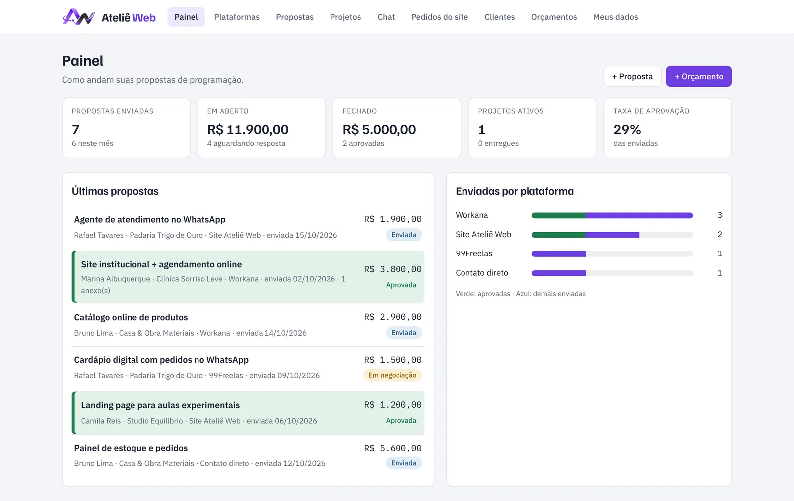

Telas reais do sistema, preenchidas com dados de demonstração.
Sistema sob medida · Estudo de caso
Ateliê de Propostas: CRM do primeiro contato à entrega
O sistema que usamos para tocar o próprio Ateliê, pensado para quem vende serviços e precisa organizar propostas, orçamentos e projetos.
- Desafio
- Propostas espalhadas entre plataformas de freelance, WhatsApp e e-mail, sem saber o que estava em aberto nem o que tinha sido fechado.
- Solução
- Painel único com clientes, propostas e anexos, orçamento formal em PDF com logo, acompanhamento de projeto com etapas e sub-etapas, e documento de entrega gerado automaticamente.
- Destaques
- Taxa de aprovação por plataforma, chat e pedidos do site caindo direto no sistema, sincronização na nuvem e controle de usuários.